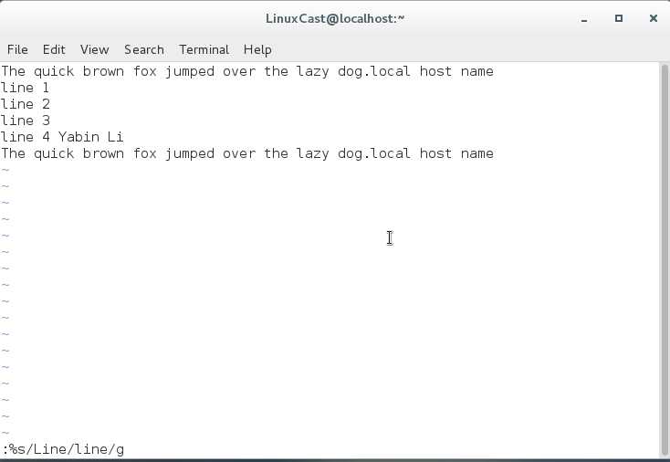

1、VI的优点：
①、vi很多系统都预装
②、vi是轻量级且处理速度极快的文本编辑器
2、vi的启动和退出
vi file
在命令模式下输入“：q”，退出文本编辑。
3、vi的三种模式：
①、命令模式：
vi启动时，默认命令模式；任何情况下，连按两下"esc"按键可以退到命令模式；命令模式下可以接收多种快捷键操作
②、编辑模式：
在命令模式下输入i进入编辑模式，可以编辑文本；
③、特权模式：
保存修改，退出文本编辑等操作
4、移动光标
命令模式下提供了大量的移动命令，
l or 右箭头 向右移动一个字符
h or 左箭头 向左移动一个字符
j or 下箭头 向下移动一行
k or 上箭头 向上移动一行
0 (零按键) 移动到当前行的行首。
ˆ 移动到当前行的第一个非空字符
$ 移动到当前行的末尾。
5、基本编辑
①、追加文本
i: 光标之前插入字符，进入编辑模式
a ：光标之后插入字符，进入编辑模式
A ：光标所在行尾插入字符，进入编辑模式
②、打开一行
o：光标下方插入一行
O：光标上方插入一行
③、删除文本
x：删除光标所在字符
2x：删除光标后2个字符
dd：删除光标所在行文本
2dd：删除光标下方两行文本
④、剪切、复制和粘贴文本
d 命令除了删除功能可以当做“剪切”来使用，p粘贴
yy 复制当前行，p粘贴
yG 从当前行到文件末尾
y$ 从当前光标位置到当前行的末尾
yW 从当前光标位置到下一个单词的开头。
⑤、连接行
L：在上一行的末尾输入L，将两行并做一行
6、查找和替换
①、查找一行
f命令查找当前行，移动光标到下一个指定字符，通过分号继续下一行的查找。
②、查找整个文件
/ 可以查找整个文件向匹配的字符，enter执行查找。n 继续执行查找，移动光标到下一个出现指定字符的位置
③、全局寻找和替换
:%s/Line/line/g
":"进入特权模式
%：表示操作范围，%表示从第一行到最后一行，也可以表示为1，$
s:所要执行的操作，s表示超找并替换。
/Line/line 由“Line”替换成“line”
g：global 全局的意思，如果去掉“g”则只会替换每行中第一个匹配字符
c： 表示是否需要逐个确认替换，（y确认替换，n跳过）


7、编辑多个文件
①、文件之间的转换
：n 切换到下一个文件
：N 切换到前一个文件
：buffers 查看已经打开的文件

：buffer2 打开缓冲区第二个文件

②、从一个文件复制到另一个文件的内容
yy复制当前行，buffer 2 切换缓冲区 ，p粘贴。
③、插入整个文件到另一个文件
:r foo.txt
r read 把指定的文本插入光标之前
保存工作
:w 保存修改
:w foo1.txt save as